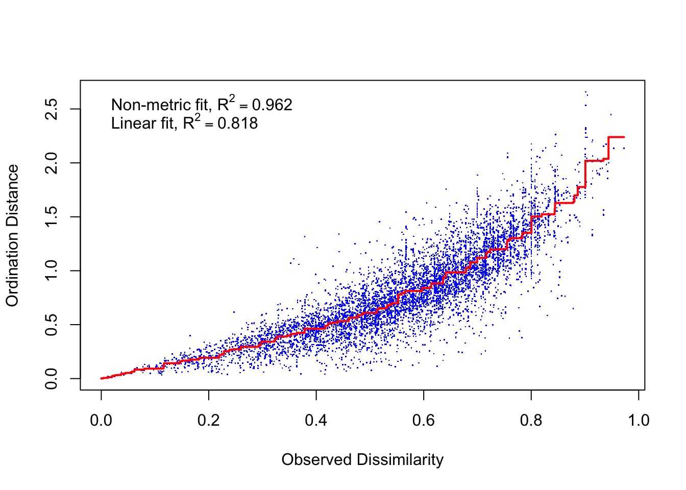

This document examines fish community composition inside and outside the boundaries of the Hind Bank Marine Conservation District (MCD) and Virgin Islands Coral Reef National Monument (VICRNM).
First we need to calculate the density (#/100m2) and biomass (g/100m2) of each group at each site.
The code below does the following:
groupsitesum <- dl %>%
mutate(Lion=ifelse(ScientificName=="Pterois volitans", TotalNumber, 0),
Lion.biomass=ifelse(ScientificName=="Pterois volitans", TotalBiomass, 0)) %>%
select(SiteID,MPA,InOut,
all_of(names(grouplabels)),
all_of(paste0(names(grouplabels),".biomass"))) %>%
group_by(SiteID, MPA, InOut) %>%
summarise(across(everything(), sum), .groups="drop")This table is the first 6 rows of the result:
| Site | MPA | Location | Large-bodied non-predator Density | Large-bodied predator Density | Non-reef associated Density | Small-bodied non-prey Density | Small-bodied prey Density | Lionfish Density | Large-bodied non-predator Biomass | Large-bodied predator Biomass | Non-reef associated Biomass | Small-bodied non-prey Biomass | Small-bodied prey Biomass | Lionfish Biomass |
|---|---|---|---|---|---|---|---|---|---|---|---|---|---|---|
| MCD101 | MCD | IN | 4 | 0 | 0 | 3 | 164 | 0 | 1607 | 0 | 0 | 0 | 183 | 0 |
| MCD102 | MCD | IN | 12 | 0 | 0 | 0 | 6 | 0 | 3919 | 0 | 0 | 0 | 44 | 0 |
| MCD103 | MCD | IN | 10 | 0 | 0 | 0 | 120 | 0 | 3953 | 0 | 0 | 0 | 212 | 0 |
| MCD104 | MCD | IN | 2 | 1 | 0 | 2 | 220 | 0 | 688 | 3074 | 0 | 0 | 192 | 0 |
| MCD105 | MCD | IN | 28 | 0 | 1 | 0 | 12 | 2 | 11230 | 0 | 789 | 0 | 88 | 944 |
| MCD106 | MCD | IN | 17 | 0 | 1 | 0 | 26 | 0 | 4555 | 0 | 2459 | 0 | 125 | 0 |
The code below creates a matrix of densities of groups of interest at each site, using that to create an NMDS and the associated stressplot.
density_matrix <- as.matrix(groupsitesum[names(grouplabels)])
dimnames(density_matrix) <- list(as.character(groupsitesum$SiteID), names(grouplabels))
#dens_dist <- vegdist(density_matrix, method="jaccard")
dens_NMDS <- metaMDS(density_matrix, distance="jaccard", k=2)## Square root transformation
## Wisconsin double standardization
## Run 0 stress 0.148791
## Run 1 stress 0.1618468
## Run 2 stress 0.1979057
## Run 3 stress 0.1462312
## ... New best solution
## ... Procrustes: rmse 0.03322234 max resid 0.2700541
## Run 4 stress 0.146839
## Run 5 stress 0.157139
## Run 6 stress 0.1513262
## Run 7 stress 0.1565732
## Run 8 stress 0.1557859
## Run 9 stress 0.1612612
## Run 10 stress 0.1540433
## Run 11 stress 0.1600114
## Run 12 stress 0.1704163
## Run 13 stress 0.1583225
## Run 14 stress 0.1598099
## Run 15 stress 0.1601987
## Run 16 stress 0.1589977
## Run 17 stress 0.1615233
## Run 18 stress 0.1541763
## Run 19 stress 0.1599654
## Run 20 stress 0.1609753
## *** No convergence -- monoMDS stopping criteria:
## 16: stress ratio > sratmax
## 4: scale factor of the gradient < sfgrminstressplot(dens_NMDS)The fit is good with fairly low stress.
The following code converts the NMDS into a data frame and plots it.
dens_sites <- as.data.frame(scores(dens_NMDS))
dens_sites$site <- rownames(dens_sites)
dens_sites$mpa <- groupsitesum$MPA
dens_sites$inout <- groupsitesum$InOut
dens_species <- as.data.frame(scores(dens_NMDS, display="species"))
dens_species$species <- rownames(dens_species)
dens_species$specieslabels <- grouplabels
ggplot() +
geom_label(data=dens_species,aes(x=NMDS1,y=NMDS2,label=gsub(" ","\n", specieslabels)),
size=6,alpha=0.5) +
geom_point(data=dens_sites,aes(x=NMDS1,y=NMDS2,shape=mpa,color=mpa),size=3) +
#geom_text(data=dens_sites,aes(x=NMDS1,y=NMDS2,label=site),size=6,vjust=0) +
stat_ellipse(data=dens_sites, aes(x=NMDS1,y=NMDS2,color=mpa),
level = 0.95) +
stat_ellipse(data=dens_sites, aes(x=NMDS1,y=NMDS2,color=inout),
level = 0.95) +
scale_color_manual("", values=allcolors,
breaks=c("MCD","VICRNM","IN","OUT"),
labels=c("MCD","VICRNM","IN","OUT")) +
scale_shape_manual("", values = c(16,17)) +
scale_x_continuous(limits=c(-1.25,1.5)) +
theme(text=element_text(size=16), panel.background = element_blank(),
axis.line=element_line())## Warning: Removed 4 rows containing non-finite values (stat_ellipse).
## Warning: Removed 4 rows containing non-finite values (stat_ellipse).## Warning: Removed 4 rows containing missing values (geom_point).NMDS plot of density of various functional groups of interest by MPA. Groups were adapted from Green et al (2012). Ellipses represent 95% groupings by MPA (inside and outside combined for each MPA).
We can follow up the NMDS with a PERMANOVA.
dens_perm <- adonis2(density_matrix ~ paste(MPA,InOut), data = groupsitesum)
dens_perm## Permutation test for adonis under reduced model
## Terms added sequentially (first to last)
## Permutation: free
## Number of permutations: 999
##
## adonis2(formula = density_matrix ~ paste(MPA, InOut), data = groupsitesum)
## Df SumOfSqs R2 F Pr(>F)
## paste(MPA, InOut) 3 1.7984 0.11185 4.9533 0.001 ***
## Residual 118 14.2812 0.88815
## Total 121 16.0796 1.00000
## ---
## Signif. codes: 0 '***' 0.001 '**' 0.01 '*' 0.05 '.' 0.1 ' ' 1perm_p <- dens_perm$`Pr(>F)`[1]Locations (in terms of MPA and in/out) are different in their density of groups of interest (df=3, p=0.001). Since the PERMANOVA was significant, we can do a SIMPER analysis to see which groups are contributing the most to differences.
dens_sim <- with(groupsitesum, simper(density_matrix, paste(MPA,InOut)))
summary(dens_sim)##
## Contrast: MCD IN_MCD OUT
##
## average sd ratio ava avb cumsum
## SB.Prey 0.3944689 0.244306 1.6147 112.3871 64.4000 0.7774
## LB.non.pred.non.comp 0.0593696 0.070287 0.8447 7.7419 8.6000 0.8944
## Non.Reef.Asso 0.0356882 0.140646 0.2537 1.6452 17.4000 0.9647
## LB.predator 0.0097724 0.011427 0.8552 1.1613 1.5000 0.9840
## Lion 0.0075127 0.009738 0.7715 0.9677 0.6333 0.9988
## SB.NonPrey 0.0006111 0.002494 0.2451 0.1613 0.0000 1.0000
##
## Contrast: MCD IN_VICRNM IN
##
## average sd ratio ava avb cumsum
## SB.Prey 0.4082173 0.234669 1.7395 112.3871 164.0323 0.8338
## LB.non.pred.non.comp 0.0597417 0.096117 0.6215 7.7419 16.5806 0.9558
## Non.Reef.Asso 0.0092557 0.013373 0.6921 1.6452 2.0968 0.9747
## LB.predator 0.0070158 0.007695 0.9117 1.1613 1.8065 0.9890
## Lion 0.0048888 0.005871 0.8327 0.9677 0.3226 0.9990
## SB.NonPrey 0.0004801 0.001984 0.2420 0.1613 0.0000 1.0000
##
## Contrast: MCD IN_VICRNM OUT
##
## average sd ratio ava avb cumsum
## SB.Prey 0.3895119 0.208901 1.8646 112.3871 109.900 0.8429
## LB.non.pred.non.comp 0.0414580 0.051716 0.8016 7.7419 5.567 0.9327
## Non.Reef.Asso 0.0152893 0.040347 0.3789 1.6452 4.733 0.9657
## LB.predator 0.0098352 0.013932 0.7059 1.1613 1.867 0.9870
## Lion 0.0054457 0.006262 0.8697 0.9677 0.200 0.9988
## SB.NonPrey 0.0005465 0.002219 0.2463 0.1613 0.000 1.0000
##
## Contrast: MCD OUT_VICRNM IN
##
## average sd ratio ava avb cumsum
## SB.Prey 0.398094 0.249506 1.5955 64.4000 164.0323 0.7864
## LB.non.pred.non.comp 0.064479 0.098571 0.6541 8.6000 16.5806 0.9138
## Non.Reef.Asso 0.031662 0.130354 0.2429 17.4000 2.0968 0.9763
## LB.predator 0.008031 0.008332 0.9639 1.5000 1.8065 0.9922
## Lion 0.003963 0.006869 0.5770 0.6333 0.3226 1.0000
## SB.NonPrey 0.000000 0.000000 NaN 0.0000 0.0000 1.0000
##
## Contrast: MCD OUT_VICRNM OUT
##
## average sd ratio ava avb cumsum
## SB.Prey 0.349672 0.221786 1.5766 64.4000 109.900 0.7763
## LB.non.pred.non.comp 0.045664 0.047925 0.9528 8.6000 5.567 0.8777
## Non.Reef.Asso 0.039286 0.143536 0.2737 17.4000 4.733 0.9649
## LB.predator 0.011380 0.014393 0.7907 1.5000 1.867 0.9901
## Lion 0.004446 0.007493 0.5933 0.6333 0.200 1.0000
## SB.NonPrey 0.000000 0.000000 NaN 0.0000 0.000 1.0000
##
## Contrast: VICRNM IN_VICRNM OUT
##
## average sd ratio ava avb cumsum
## SB.Prey 0.295598 0.209227 1.4128 164.0323 109.900 0.8005
## LB.non.pred.non.comp 0.050476 0.091886 0.5493 16.5806 5.567 0.9372
## Non.Reef.Asso 0.013136 0.036055 0.3643 2.0968 4.733 0.9727
## LB.predator 0.008369 0.010183 0.8218 1.8065 1.867 0.9954
## Lion 0.001698 0.003904 0.4348 0.3226 0.200 1.0000
## SB.NonPrey 0.000000 0.000000 NaN 0.0000 0.000 1.0000
## Permutation: free
## Number of permutations: 0dens_sim## cumulative contributions of most influential species:
##
## $`MCD IN_MCD OUT`
## SB.Prey
## 0.7773966
##
## $`MCD IN_VICRNM IN`
## SB.Prey
## 0.8337782
##
## $`MCD IN_VICRNM OUT`
## SB.Prey
## 0.8429414
##
## $`MCD OUT_VICRNM IN`
## SB.Prey
## 0.7863896
##
## $`MCD OUT_VICRNM OUT`
## SB.Prey
## 0.7762761
##
## $`VICRNM IN_VICRNM OUT`
## SB.Prey
## 0.800478SIMPER analysis showed the largest contributor to these differences is small-bodied prey, accounting for 78-84% of the differences between locations.
The code below creates a matrix of biomass of groups of interest at each site, using that to create an NMDS and the associated stressplot.
biomass_matrix <- as.matrix(groupsitesum[paste0(names(grouplabels),".biomass")])
dimnames(biomass_matrix) <- list(as.character(groupsitesum$SiteID),
paste0(names(grouplabels),".biomass"))
bio_NMDS <- metaMDS(biomass_matrix, distance="jaccard", k=2)## Square root transformation
## Wisconsin double standardization
## Run 0 stress 0.1994939
## Run 1 stress 0.1990121
## ... New best solution
## ... Procrustes: rmse 0.01996302 max resid 0.2045859
## Run 2 stress 0.1961501
## ... New best solution
## ... Procrustes: rmse 0.03395298 max resid 0.3646899
## Run 3 stress 0.1961507
## ... Procrustes: rmse 0.0002625983 max resid 0.002783124
## ... Similar to previous best
## Run 4 stress 0.1961502
## ... Procrustes: rmse 0.000124021 max resid 0.001311612
## ... Similar to previous best
## Run 5 stress 0.199207
## Run 6 stress 0.2546975
## Run 7 stress 0.2160026
## Run 8 stress 0.1961501
## ... Procrustes: rmse 4.114205e-05 max resid 0.0003590122
## ... Similar to previous best
## Run 9 stress 0.2157018
## Run 10 stress 0.2160669
## Run 11 stress 0.2179402
## Run 12 stress 0.2097235
## Run 13 stress 0.1994939
## Run 14 stress 0.2178522
## Run 15 stress 0.1961906
## ... Procrustes: rmse 0.01716358 max resid 0.1444295
## Run 16 stress 0.199948
## Run 17 stress 0.1958578
## ... New best solution
## ... Procrustes: rmse 0.009153648 max resid 0.09674025
## Run 18 stress 0.1962395
## ... Procrustes: rmse 0.01447968 max resid 0.1438602
## Run 19 stress 0.1958576
## ... New best solution
## ... Procrustes: rmse 0.0001902621 max resid 0.001822554
## ... Similar to previous best
## Run 20 stress 0.199494
## *** Solution reachedstressplot(bio_NMDS)
The following code converts the NMDS into a data frame and plots it.
bio_sites <- as.data.frame(scores(bio_NMDS))
bio_sites$site <- rownames(bio_sites)
bio_sites$mpa <- groupsitesum$MPA
bio_sites$inout <- groupsitesum$InOut
bio_species <- as.data.frame(scores(bio_NMDS, "species"))
bio_species$species <- rownames(bio_species)
bio_species$specieslabels <- grouplabels
ggplot() +
geom_label(data=bio_species,aes(x=NMDS1,y=NMDS2,label=gsub(" ","\n", specieslabels)),
size=6,alpha=0.5) +
geom_point(data=bio_sites,aes(x=NMDS1,y=NMDS2,shape=mpa,color=mpa),size=3) +
#geom_text(data=bio_sites,aes(x=NMDS1,y=NMDS2,label=site),size=6,vjust=0) +
scale_color_manual("", values=allcolors,
breaks=c("MCD","VICRNM","IN","OUT"),
labels=c("MCD","VICRNM","IN","OUT")) +
scale_shape_manual("", values = c(16,17)) +
stat_ellipse(data=bio_sites, aes(x=NMDS1,y=NMDS2,color=mpa),
level = 0.95) +
stat_ellipse(data=bio_sites, aes(x=NMDS1,y=NMDS2,color=inout),
level = 0.95) +
#scale_x_continuous(limits=c(-1.7,1.1))+
theme(text=element_text(size=16), panel.background = element_blank(),
axis.line=element_line())NMDS plot of biomass of various functional groups of interest by MPA. Groups were adapted from Green et al (2012). Ellipses represent 95% groupings by MPA (inside and outside combined for each MPA).
We can follow up the NMDS with a PERMANOVA.
bio_perm <- adonis2(biomass_matrix ~ paste(MPA,InOut), data = groupsitesum)
bio_perm## Permutation test for adonis under reduced model
## Terms added sequentially (first to last)
## Permutation: free
## Number of permutations: 999
##
## adonis2(formula = biomass_matrix ~ paste(MPA, InOut), data = groupsitesum)
## Df SumOfSqs R2 F Pr(>F)
## paste(MPA, InOut) 3 0.9943 0.03532 1.4401 0.113
## Residual 118 27.1566 0.96468
## Total 121 28.1509 1.00000Since the PERMANOVA is not significant, we don’t need to do a SIMPER.
First we need to calculate the density (#/100m2) and biomass (g/100m2) of each trophic group at each site.
trophsitesum <- dl %>%
group_by(SiteID, MPA, InOut, Troph) %>%
summarize(TotalNumber=sum(TotalNumber),
TotalBiomass=sum(TotalBiomass), .groups="drop")
trophdens <- trophsitesum %>%
pivot_wider(id_cols=c(SiteID, MPA,InOut),
names_from = Troph, values_from = TotalNumber,
values_fill = 0)
trophbio <- trophsitesum %>%
pivot_wider(id_cols=c(SiteID, MPA,InOut),
names_from = Troph, values_from = TotalBiomass,
values_fill = 0)This table is the first 6 rows of the resulting tables:
| Site | MPA | Location | Herbivore | Invertivore | Piscivore | Planktivore |
|---|---|---|---|---|---|---|
| MCD101 | MCD | IN | 40 | 118 | 3 | 50 |
| MCD102 | MCD | IN | 20 | 14 | 6 | 1 |
| MCD103 | MCD | IN | 86 | 8 | 3 | 110 |
| MCD104 | MCD | IN | 11 | 120 | 2 | 114 |
| MCD105 | MCD | IN | 58 | 5 | 9 | 5 |
| MCD106 | MCD | IN | 34 | 7 | 1 | 24 |
| Site | MPA | Location | Herbivore | Invertivore | Piscivore | Planktivore |
|---|---|---|---|---|---|---|
| MCD101 | MCD | IN | 1565 | 568 | 677 | 1464 |
| MCD102 | MCD | IN | 2327 | 997 | 1617 | 10 |
| MCD103 | MCD | IN | 5295 | 191 | 285 | 1409 |
| MCD104 | MCD | IN | 552 | 1068 | 3082 | 161 |
| MCD105 | MCD | IN | 7573 | 2773 | 4528 | 38 |
| MCD106 | MCD | IN | 4830 | 734 | 2459 | 118 |
trophdensmatrix <- as.matrix(trophdens[,levels(as.factor(dl$Troph))])
dimnames(trophdensmatrix) <- list(as.character(trophdens$SiteID),
as.character(levels(as.factor(dl$Troph))))
trophdens_NMDS <- metaMDS(trophdensmatrix, distance="jaccard", k=2)## Square root transformation
## Wisconsin double standardization
## Run 0 stress 0.1463926
## Run 1 stress 0.1467591
## ... Procrustes: rmse 0.01306104 max resid 0.131958
## Run 2 stress 0.1457656
## ... New best solution
## ... Procrustes: rmse 0.01038015 max resid 0.08433334
## Run 3 stress 0.2085842
## Run 4 stress 0.1875115
## Run 5 stress 0.1463927
## Run 6 stress 0.1467615
## Run 7 stress 0.1560981
## Run 8 stress 0.1463926
## Run 9 stress 0.1984867
## Run 10 stress 0.1592147
## Run 11 stress 0.1442178
## ... New best solution
## ... Procrustes: rmse 0.01900744 max resid 0.1381651
## Run 12 stress 0.1463926
## Run 13 stress 0.1467165
## Run 14 stress 0.1401981
## ... New best solution
## ... Procrustes: rmse 0.01679446 max resid 0.1336892
## Run 15 stress 0.1371657
## ... New best solution
## ... Procrustes: rmse 0.0142774 max resid 0.136476
## Run 16 stress 0.2156919
## Run 17 stress 0.1371657
## ... New best solution
## ... Procrustes: rmse 8.026397e-06 max resid 3.766359e-05
## ... Similar to previous best
## Run 18 stress 0.1476996
## Run 19 stress 0.2051788
## Run 20 stress 0.1463926
## *** Solution reachedstressplot(trophdens_NMDS)trophdens_sites <- as.data.frame(scores(trophdens_NMDS))
trophdens_sites$site <- rownames(trophdens_sites)
trophdens_sites$mpa <- trophdens$MPA
trophdens_sites$inout <- trophdens$InOut
trophdens_species <- as.data.frame(scores(trophdens_NMDS, "species"))
trophdens_species$species <- rownames(trophdens_species)
ggplot() +
geom_label(data=trophdens_species,aes(x=NMDS1,y=NMDS2,label=species),
size=6,alpha=0.5) +
geom_point(data=trophdens_sites,aes(x=NMDS1,y=NMDS2,shape=mpa,color=mpa),size=3) +
scale_color_manual("", values=allcolors,
breaks=c("MCD","VICRNM","IN","OUT"),
labels=c("MCD","VICRNM","IN","OUT")) +
scale_shape_manual("", values = c(16,17)) +
stat_ellipse(data=trophdens_sites, aes(x=NMDS1,y=NMDS2,color=mpa),
level = 0.95) +
stat_ellipse(data=trophdens_sites, aes(x=NMDS1,y=NMDS2,color=inout),
level = 0.95) +
theme(text=element_text(size=16), panel.background = element_blank(),
axis.line=element_line())NMDS plot of density of trophic groups by MPA. Ellipses represent 95% groupings by MPA (inside and outside combined for each MPA).
We can follow up the NMDS with a PERMANOVA.
trophdens_perm <- adonis2(trophdensmatrix ~ paste(MPA,InOut), data = trophdens)
trophdens_perm## Permutation test for adonis under reduced model
## Terms added sequentially (first to last)
## Permutation: free
## Number of permutations: 999
##
## adonis2(formula = trophdensmatrix ~ paste(MPA, InOut), data = trophdens)
## Df SumOfSqs R2 F Pr(>F)
## paste(MPA, InOut) 3 1.4277 0.09648 4.2 0.001 ***
## Residual 118 13.3704 0.90352
## Total 121 14.7981 1.00000
## ---
## Signif. codes: 0 '***' 0.001 '**' 0.01 '*' 0.05 '.' 0.1 ' ' 1trophdensperm_p <- trophdens_perm$`Pr(>F)`[1]Locations (in terms of MPA and in/out) are different in their density of trophic groups (df=3, p=0.001). Since the PERMANOVA was significant, we can do a SIMPER analysis to see which groups are contributing the most to differences.
trophdenssim <- with(trophdens, simper(trophdensmatrix, paste(MPA,InOut)))
trophdenssim## cumulative contributions of most influential species:
##
## $`MCD IN_MCD OUT`
## planktivore invertivore
## 0.4231150 0.7851014
##
## $`MCD IN_VICRNM IN`
## planktivore invertivore
## 0.4861248 0.7726336
##
## $`MCD IN_VICRNM OUT`
## planktivore invertivore herbivore
## 0.4038426 0.6882689 0.9567174
##
## $`MCD OUT_VICRNM IN`
## planktivore invertivore
## 0.4978853 0.7331342
##
## $`MCD OUT_VICRNM OUT`
## planktivore herbivore
## 0.3975913 0.7318010
##
## $`VICRNM IN_VICRNM OUT`
## planktivore herbivore
## 0.4995286 0.7639326Herbivores and invertivores contribute the most to differences in fish density across sites.
trophbiomatrix <- as.matrix(trophbio[,levels(as.factor(dl$Troph))])
dimnames(trophbiomatrix) <- list(as.character(trophbio$SiteID),
as.character(levels(as.factor(dl$Troph))))
trophbio_NMDS <- metaMDS(trophbiomatrix, distance = "jaccard", k=2)## Square root transformation
## Wisconsin double standardization
## Run 0 stress 0.1844903
## Run 1 stress 0.1867489
## Run 2 stress 0.1867489
## Run 3 stress 0.1867509
## Run 4 stress 0.1867489
## Run 5 stress 0.1844721
## ... New best solution
## ... Procrustes: rmse 0.00265747 max resid 0.02351921
## Run 6 stress 0.1844721
## ... Procrustes: rmse 1.238669e-05 max resid 9.253767e-05
## ... Similar to previous best
## Run 7 stress 0.186749
## Run 8 stress 0.1844904
## ... Procrustes: rmse 0.002703131 max resid 0.02387415
## Run 9 stress 0.1844904
## ... Procrustes: rmse 0.002679905 max resid 0.02367832
## Run 10 stress 0.1844721
## ... Procrustes: rmse 6.19026e-06 max resid 4.966814e-05
## ... Similar to previous best
## Run 11 stress 0.186749
## Run 12 stress 0.1867509
## Run 13 stress 0.1845379
## ... Procrustes: rmse 0.004149117 max resid 0.02857575
## Run 14 stress 0.1845379
## ... Procrustes: rmse 0.004154296 max resid 0.02858426
## Run 15 stress 0.2055547
## Run 16 stress 0.1867489
## Run 17 stress 0.184538
## ... Procrustes: rmse 0.004200646 max resid 0.02856302
## Run 18 stress 0.1867489
## Run 19 stress 0.1845379
## ... Procrustes: rmse 0.004177545 max resid 0.0285739
## Run 20 stress 0.18454
## ... Procrustes: rmse 0.002901911 max resid 0.02845557
## *** Solution reachedstressplot(trophbio_NMDS)trophbio_sites <- as.data.frame(scores(trophbio_NMDS))
trophbio_sites$site <- rownames(trophbio_sites)
trophbio_sites$mpa <- trophbio$MPA
trophbio_sites$inout <- trophbio$InOut
trophbio_species <- as.data.frame(scores(trophbio_NMDS, "species"))
trophbio_species$species <- rownames(trophbio_species)
ggplot() +
geom_label(data=trophbio_species,aes(x=NMDS1,y=NMDS2,label=species),
size=6,alpha=0.5) +
geom_point(data=trophbio_sites,aes(x=NMDS1,y=NMDS2,shape=mpa,color=mpa),size=3) +
#geom_text(data=trophbio_sites,aes(x=NMDS1,y=NMDS2,label=site),size=6,vjust=0) +
scale_color_manual("", values=allcolors,
breaks=c("MCD","VICRNM","IN","OUT"),
labels=c("MCD","VICRNM","IN","OUT")) +
scale_shape_manual("", values = c(16,17)) +
stat_ellipse(data=trophbio_sites, aes(x=NMDS1,y=NMDS2,color=mpa),
level = 0.95) +
stat_ellipse(data=trophbio_sites, aes(x=NMDS1,y=NMDS2,color=inout),
level = 0.95) +
theme(text=element_text(size=20), panel.background = element_blank(),
axis.line=element_line())We can follow up the NMDS with a PERMANOVA.
trophbio_perm <- adonis2(trophbiomatrix ~ paste(MPA,InOut), data = trophbio)
trophbio_perm## Permutation test for adonis under reduced model
## Terms added sequentially (first to last)
## Permutation: free
## Number of permutations: 999
##
## adonis2(formula = trophbiomatrix ~ paste(MPA, InOut), data = trophbio)
## Df SumOfSqs R2 F Pr(>F)
## paste(MPA, InOut) 3 0.9642 0.04352 1.7895 0.029 *
## Residual 118 21.1933 0.95648
## Total 121 22.1576 1.00000
## ---
## Signif. codes: 0 '***' 0.001 '**' 0.01 '*' 0.05 '.' 0.1 ' ' 1Locations (in terms of MPA and in/out) are different in their density of trophic groups (df=3, p=0.001). Since the PERMANOVA was significant, we can do a SIMPER analysis to see which groups are contributing the most to differences.
trophbiosim <- with(trophbio, simper(trophbiomatrix, paste(MPA,InOut)))
trophbiosim## cumulative contributions of most influential species:
##
## $`MCD IN_MCD OUT`
## piscivore herbivore invertivore
## 0.3283038 0.6345043 0.8944899
##
## $`MCD IN_VICRNM IN`
## invertivore herbivore piscivore
## 0.3716879 0.6484804 0.8832377
##
## $`MCD IN_VICRNM OUT`
## piscivore herbivore invertivore
## 0.3749769 0.6612302 0.8977141
##
## $`MCD OUT_VICRNM IN`
## invertivore piscivore herbivore
## 0.3373604 0.6431671 0.8886933
##
## $`MCD OUT_VICRNM OUT`
## piscivore herbivore invertivore
## 0.4192174 0.6685286 0.9056473
##
## $`VICRNM IN_VICRNM OUT`
## piscivore invertivore herbivore
## 0.3521341 0.6801949 0.8911165Invertivores, piscivores, and herbivores all contribute significantly to differences in biomass across sites.
comsum <- dl %>%
filter(Commercial=="Y") %>%
group_by(SiteID, MPA, InOut, ScientificName) %>%
summarize(TotalNumber=sum(TotalNumber),
TotalBiomass=sum(TotalBiomass), .groups="drop")
comdens <- comsum %>%
pivot_wider(id_cols=c(SiteID, MPA,InOut),
names_from = ScientificName, values_from = TotalNumber,
values_fill = 0)| SiteID | MPA | InOut | Ocyurus chrysurus | Cephalopholis fulva | Epinephelus guttatus | Lutjanus analis | Lutjanus apodus | Lutjanus cyanopterus | Lutjanus jocu | Epinephelus striatus | Lutjanus griseus | Lachnolaimus maximus | Lutjanus synagris | Mycteroperca venenosa |
|---|---|---|---|---|---|---|---|---|---|---|---|---|---|---|
| MCD101 | MCD | IN | 1 | 0 | 0 | 0 | 0 | 0 | 0 | 0 | 0 | 0 | 0 | 0 |
| MCD102 | MCD | IN | 6 | 0 | 0 | 0 | 0 | 0 | 0 | 0 | 0 | 0 | 0 | 0 |
| MCD103 | MCD | IN | 1 | 0 | 0 | 0 | 0 | 0 | 0 | 0 | 0 | 0 | 0 | 0 |
| MCD105 | MCD | IN | 6 | 0 | 0 | 0 | 0 | 0 | 0 | 0 | 0 | 0 | 0 | 0 |
| MCD107 | MCD | IN | 1 | 1 | 1 | 0 | 0 | 0 | 0 | 0 | 0 | 0 | 0 | 0 |
| MCD108 | MCD | IN | 1 | 0 | 1 | 0 | 0 | 0 | 0 | 0 | 0 | 0 | 0 | 0 |
There are too many zeros in this dataset for an NMDS to work.